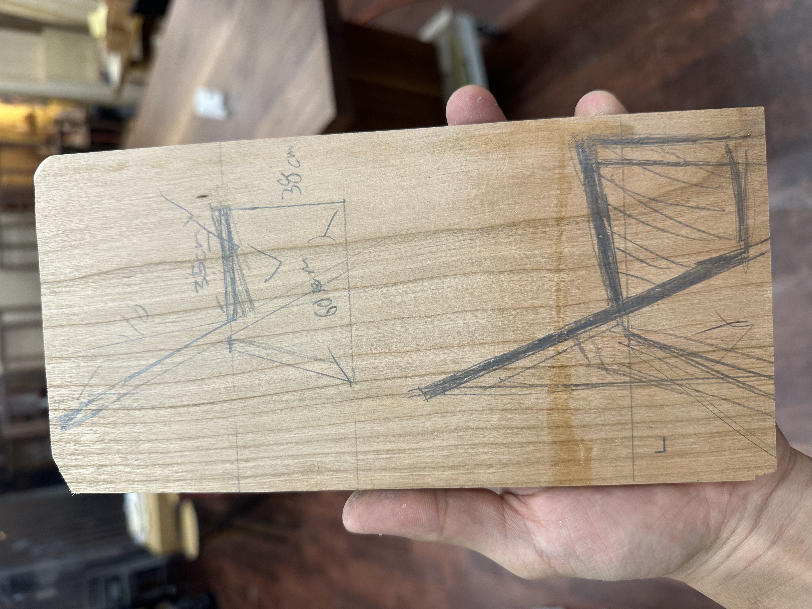
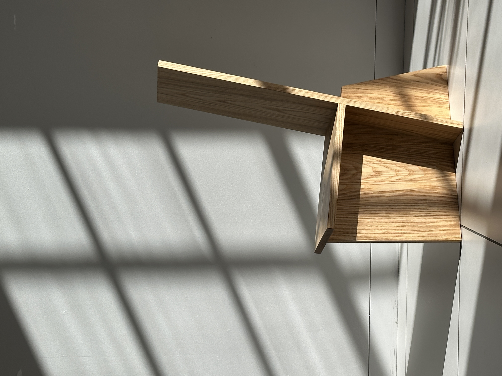

Panel
How much can we subtract before a form loses its soul?
Given a challenge by Bahk Jong Sun, the furniture maker behind the Oscar-winning film Parasite, to design and build a chair from two boards in six hours. I focused on pure connection. Each joint was cut and press-fitted, relying on joinery and proportion instead of hardware or glue. The result is a flat-packable chair that finds beauty in what is functional, minimal.
Category Furniture
Date 2025
Duration 6 Hours
Skills Rapid Prototyping, Woodworking, Furniture Design
6 Hours. 2 Boards. 3 Tools.
Extreme constraints force radical simplification.

The challenge was simple but unforgiving: transform two standard boards into a functional chair using only a miter saw, band saw, and nail gun. With no time for complex jigs or drying glue, the design had to be solved entirely through geometry and friction.
Objective
How can we leverage the limits of material and time to create a form where the joinery itself explains the function?



Minimalism isn't Less
Minimalism is the subtraction of the soul-less. By removing everything that wasn't structural, the chair's identity became inseparable from its construction. The "Panel" chair is a study in how few parts can define a space for the human body. Every cut on the miter saw served two purposes: defining the angle of repose and creating the interlocking notches that hold the boards in tension.
Beauty from Limits
When you have only three tools, you stop fighting the material and start listening to it. The joinery defines the aesthetic.
Pure Connection No hardware. No glue. The chair relies on the mechanical advantage of its own weight to lock the joints into place.
Flat-Pack Efficiency The entire form can be disassembled back into its original board dimensions in seconds, making it optimized for transport.
Structural Honesty The exposed end-grain and visible notches aren't decorative; they are the blueprint of the chair's integrity.